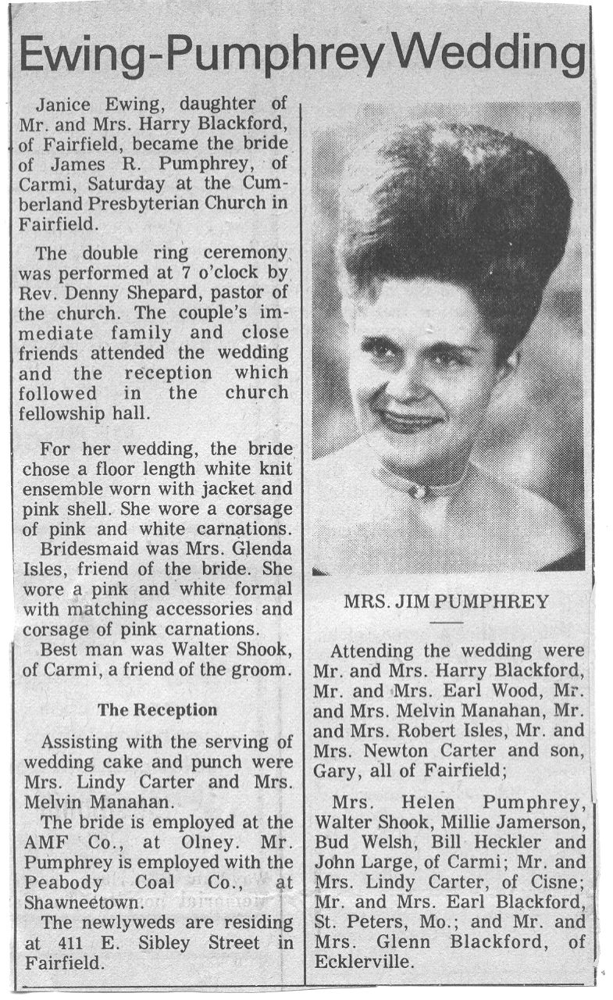

Harry Blackford Farm - Fairfield, IL
. Summary of life events hereThis demo only works in browsers that support CSS Grid Layout. If you can see this message, then your browser isn't supporting Grid. You can try out Grid in Firefox Nightly or other browsers by flipping a flag.
- 1
- 2
- 3
 4
4- 5
 6
6- 7
- 8
- 9
- 10
-
Blackford Farm
- 11
- 12
- 13
- 14
- 15
- v1
- v2
- 16
 17
17- 18
- 19
- 20
- 21
- 22
- 23
- 24
- 25
- 26
- 27
- 28
- 29
 30
30- 31
- 32
- 33
- 34
- 35
- 36
- 37
- 38
- 39
- 40
- 41
- 42
- 43
- 44
- 45
- 46
- 47
- 48
- 49
 50
50- 51
- v3
- v4
- v5
- 52
- 53
- 54
- 55
- 56
- 57
- 58
- 59
 60
60- 61


{kind=link}
{kind=link}
{kind=link}
{kind=link}
{kind=link}
{kind=link}
{kind=link}
{kind=link}
{kind=link}
{kind=link}
{kind=link}
{kind=link}
{kind=link}
{kind=link}
{kind=link}
{kind=link}
{kind=link}
{kind=link}
{kind=link}
{kind=link}
{kind=link}
{kind=link}
{kind=link}
{kind=link}
{kind=link}
{kind=link}
{kind=link}
{kind=link}
{kind=link}
{kind=link}
{kind=link}
{kind=link}
{kind=link}
{kind=link}
{kind=link}
{kind=link}
{kind=link}
{kind=link}
{kind=link}
{kind=link}
{kind=link}
{kind=link}
{kind=link}
{kind=link}
{kind=link}
{kind=link}
{kind=link}
{kind=link}
{kind=link}
{kind=link}
{kind=link}
{kind=link}
{kind=link}
{kind=link}
{kind=link}
Harry Blackford; Born December 21, 1914 - died February 4, 2001 was a farmer in Fairfield, Illinois. There was not much to distinguish him as he worked and raised his family.
Neva Louis (Crackel) Blackford was born September 26, 1915 and was orphaned in October of 1918, when both parents were killed by the Spanish Inflenza. Neva later died February 3, 1987.
Harry married Neva Louis Crackel on September 25, 1937, and they had three children: Earl, Janice, and Glenn.
Summary of life events here